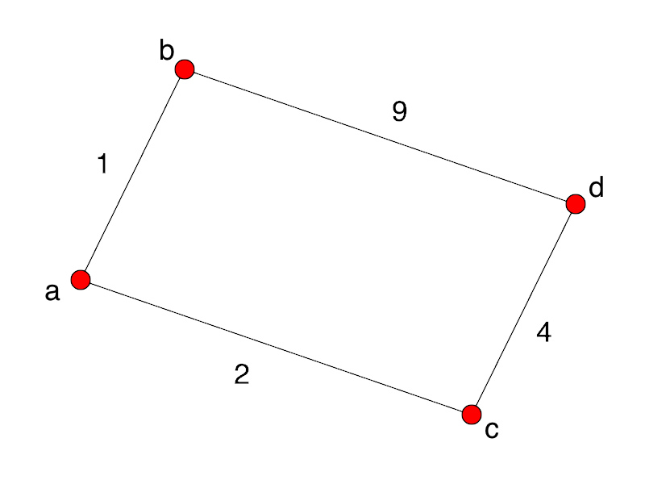

We have an optimization problem.
At each step of the algorithm, we have to make a choice, e.g.,
cut the rod here, or cut it there.
Sometimes, we need to calculate the result of all possible
choices.
But sometimes, we can do much better than either of those
choices. Sometimes, we don't need to consider the global
situation at all: we can simply make the best choice among the
options provided by the first sub-problem we face, and then
continue that procedure for all subsequent sub-problems.
An algorithm that operates in such a fashion is a greedy
algorithm. (The name comes from the idea that the
algorithm greedily grabs the best choice available to it right
away.)
Clearly, not all problems can be solved by greedy algorithms.
Consider this simple shortest path problem:

A greedy algorithm choosing the shortest path from a to d will
wrongly head to b first, rather than to c.
And that provides us a homework problem.
Tree: A connected graph with no cycles.
Given a graph G, any tree that includes all of the vertices
of G is called a spanning tree. The lowest-weight tree
that does that is a minimum spanning tree.
These are used to solve problems such as:
Our first greedy algorithm.
Weighted graph.

Steps: